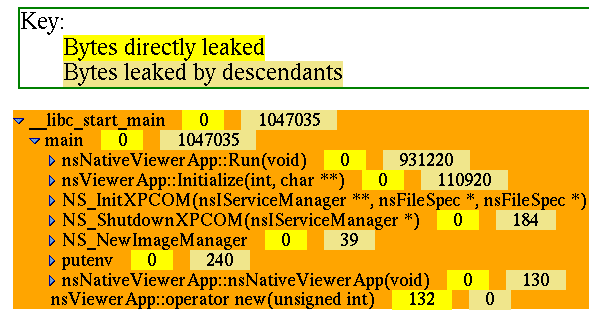

|
|
Leaky is a program which will help you find memory leaks, and as of late, help you debug reference count problems with xpcom objects. Get the Source Leaky is not currently part of the default SeaMonkey module, you will need to explicitly pull the source: cvs checkout mozilla/tools/leakyIf there is enough demand, we can make this part of the default SeaMonkey module. Building it ./configure --enable-leakyTop-of-tree build should Just Build It and leaky will show up in dist/bin. Using Leaky After it has been built, you can use TestPreload and TestMalloc and ShowLibs to debug your implementation. By setting the env LD_PRELOAD=/full/path/to/libleaky.so LIBMALLOC_LOG=1 my-programThe debugging malloc library creates two files, malloc-log and malloc-map.
The malloc-log file can be quite large for large programs (e.g. mozilla)
so be prepared to have alot of disk space. The malloc-map is tiny.
Once your program has completed execution you can use leaky to look for memory leaks, or at least use it to dump the log. For memory leaks, you use leaky like this: leaky -d <program-name-goes-here> malloc-logLeaky will then display all of the call sites where memory was leaked. To look at the entire log file contents, not just the leaks add "-a" to the arguments: leaky -d -a <program-name-goes-here> malloc-logFor debugging reference count issues, here is what I do:
(gdb) p DumpAddressMap() leaky -d -a <program-name-goes-here> malloc-log > log Leaky now has a "graph" output option. If you do this: leaky -gqx <program-name-goes-here> malloc-log | c++filt | sed -e 's/&/&/g' > /tmp/GQ0.html Then leaky will make a graph of the leaks [-g] and output that graph in xml format (currently actually html...) [-x]. I use c++filt to translate the C++ mangled names into ascii and then use sed to make it legitimate html and off it goes to a file. If you throw file at viewer (recursion is cool) then it will present you with a treeview of the leaks that you can click on to open/close sections. Screenshot below, on a test run of viewer. Enjoy! Porting to non-Intel/Linux Initial version works only on x86 linux. To work on other platforms you will need to:
Last modified: Mon Sep 27 12:19:49 PDT 1999 Send comments to Kipp Hickman |
|
|
Copyright © 1998-1999 The Mozilla Organization.
Last modified September 27, 1999. |
|